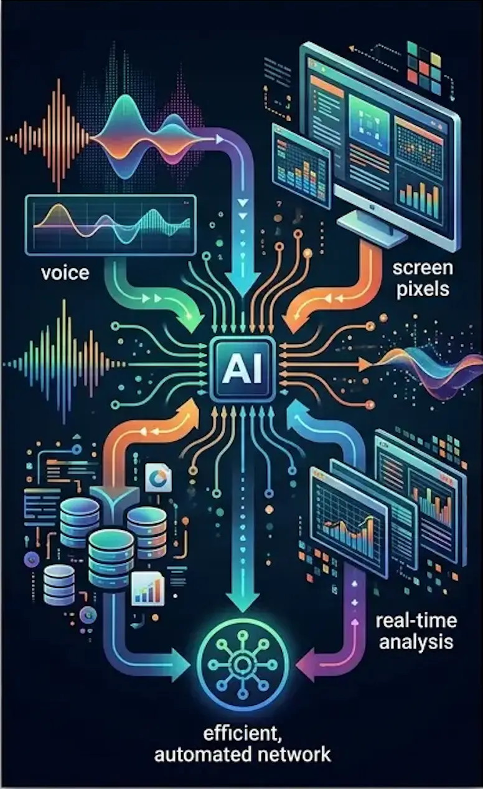
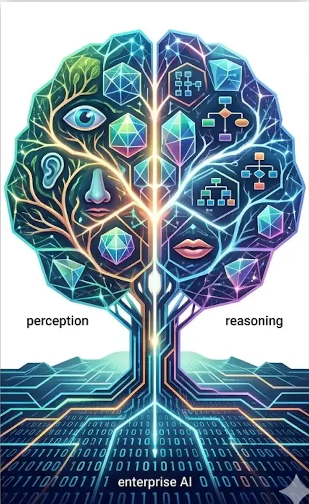

For years, enterprise AI has been largely text-based. Chatbots process written queries. Document processing extracts text. Analytics examine structured data. This worked for many use cases but left vast amounts of valuable information untapped—images, video, audio, and the complex relationships between different data types.
Multimodal AI changes this fundamentally. Instead of separate systems for text, vision, and audio, unified models process all inputs together, reasoning across modalities to extract insights impossible to obtain from any single data type alone. And unlike earlier "multimodal" systems that simply bolted together separate models, 2026's multimodal AI performs genuine cross-modal reasoning in a single forward pass.
The most significant AI shift in 2026 isn't more powerful language models—it's AI that can genuinely understand the world the way humans do, integrating what it sees, hears, and reads into coherent understanding.
What Multimodal AI Actually Means
The term "multimodal" gets thrown around frequently. Understanding what it actually means—and what distinguishes modern multimodal AI from earlier approaches—is essential.
Old "Multimodal": Pipeline Approaches
Earlier systems claimed to be multimodal by chaining together separate models:
- Convert image to text description using computer vision
- Convert audio to text transcript using speech recognition
- Feed all text to a language model for analysis
This worked but lost crucial information. Image descriptions miss visual nuances. Audio transcripts lose tone, emphasis, emotional content. The separate processing stages couldn't reason about relationships between modalities.

Modern multimodal AI processes all inputs simultaneously, reasoning across modalities in a single pass
New Multimodal: Unified Processing
Modern Large Multimodal Models (LMMs) jointly process text, images, audio, video, and structured data in a single forward pass. This enables:
- Cross-modal reasoning: Understanding how what someone says relates to what they're showing in an image
- Preserved context: Vocal tone informing interpretation of written text, visual context disambiguating language
- Genuine understanding: Processing data the way humans do—integrating multiple senses simultaneously
- Efficiency gains: One model, one pass, versus complex pipelines with multiple processing stages
💡 The Key Difference
Pipeline approaches convert everything to text, then process. Unified multimodal models process native formats directly, preserving information that text conversion would lose. When a customer says "I'm frustrated" while their screen shows an error message, a true multimodal system understands the connection between vocal tone, spoken words, and visual context simultaneously.
How Multimodal AI Works
Understanding the architecture helps clarify why multimodal AI delivers results impossible with text-only systems.
Unified Embedding Space
Multimodal models create a shared representation space where text, images, audio, and video all map to the same conceptual framework. The word "dog," a photo of a dog, and the sound of barking all occupy related positions in this shared space—enabling the model to understand their relationships.
Attention Across Modalities
Transformer architectures enable the model to attend to relevant information across all modalities simultaneously. When analyzing a customer complaint email, the model can reference attached images, previous call recordings, and account history text—weighting each according to relevance.
Native Format Processing
Rather than converting everything to text, modern multimodal models process:
- Images: As visual tokens preserving spatial relationships and visual features
- Audio: As acoustic features preserving tone, emotion, and non-verbal cues
- Video: As temporal sequences preserving motion and change over time
- Text: As semantic tokens capturing meaning and context
All these tokens flow through the same model architecture, enabling cross-modal attention and reasoning.
Enterprise Use Cases: Where Multimodal AI Delivers Value
Multimodal AI moves from interesting technology to business imperative when it solves problems single-modality systems can't address effectively.
Contact Center Intelligence
Traditional contact center AI analyzes call transcripts. Multimodal AI simultaneously processes:
- What the customer says (transcript)
- How they say it (tone, emphasis, emotion)
- What the agent sees on screen (CRM data, product details)
- What the customer sees (screen shares, product images)
- Previous interaction history (emails, chats, calls)
Real Impact: A telecommunications company implemented multimodal analysis that listens to every call, watches agent screens, and reads follow-up emails. The system flags churn risk, compliance issues, and process breaks in real time using tone in the audio, visual cues on the screen, and account data.
Results: 28% improvement in first-call resolution, 35% reduction in customer churn among flagged accounts, 40% faster agent training through AI-identified coaching opportunities.

Multimodal AI transforms contact centers by integrating voice, screen, and data analysis in real time
Manufacturing Quality Control
Assembly line quality control traditionally relied on visual inspection—either human or computer vision. Multimodal systems combine:
- High-speed camera footage of assembly process
- Acoustic signatures from pneumatic tools and machinery
- Vibration sensor data
- Temperature readings
- Production specifications and tolerances (text/data)
Real Impact: An automotive parts manufacturer deployed multimodal AI that watches assembly while listening to acoustic signatures. The system detects defects invisible to vision alone—a slightly off-pitch sound indicating improper torque, combined with visual confirmation of component position.
Results: 15% reduction in post-assembly defects in first six months, 60% faster defect identification compared to human inspectors, $2.3M annual savings from reduced warranty claims.
Healthcare Diagnostics
Medical diagnosis inherently involves multiple data types. Multimodal AI integrates:
- Medical imaging (X-rays, MRIs, CT scans)
- Patient history and symptoms (text records)
- Lab results and vital signs (structured data)
- Speech patterns during consultations (audio analysis)
- Physician notes and literature (unstructured text)
Real Impact: A radiology network implemented multimodal AI analyzing scans, patient history, and speech patterns during consultations. The system provided diagnostic confidence scores 22% more accurate than imaging-only models.
Critical insight: The AI identified cases where patient-reported symptoms didn't match imaging findings, flagging them for additional investigation. This cross-modal reasoning caught conditions that pure image analysis missed.
Retail and E-Commerce
Online shopping involves complex customer intent that text search alone struggles to capture:
- Customer uploads product image: "Find me something similar"
- Customer describes verbally: "I need a blue dress for a summer wedding"
- Previous purchase history and browsing behavior
- Style preferences inferred from saved items
Real Impact: A fashion retailer deployed multimodal search allowing customers to combine text descriptions with reference images. "Find me a similar style but in darker colors and less expensive."
Results: 43% increase in search-to-purchase conversion, 31% higher average order value from better product recommendations, 25% reduction in returns due to more accurate matching.
Multimodal search understands customer intent across images, text, and behavioral data
Security and Surveillance
Security systems benefit enormously from cross-modal analysis:
- Video footage from multiple cameras
- Audio from microphones (detecting glass breaking, shouting, alarms)
- Access control logs and badge data
- Environmental sensors (motion, temperature, pressure)
Real Impact: A corporate campus deployed multimodal security AI that correlates video, audio, and access logs. The system distinguishes between authorized after-hours work (badge access + normal behavior) and potential security incidents (unauthorized access + unusual audio).
Results: 78% reduction in false alarms compared to vision-only systems, faster incident response through automatic priority classification, improved forensic investigation with multi-modal evidence correlation.
Leading Multimodal Platforms in 2026
The multimodal AI landscape has matured rapidly, with several platforms emerging as enterprise-ready:
| Platform | Key Strengths | Best For |
|---|---|---|
| Google Gemini 3.1 | Native multimodal, strong reasoning, fast inference | General-purpose enterprise applications |
| GPT-4o | 320ms response times, excellent text-image-audio integration | Real-time customer interactions |
| Qwen3.5 Omni | Unified text, image, audio, video processing | Video analysis and content moderation |
| IBM WatsonX | Enterprise governance, hybrid deployment | Regulated industries, on-premise requirements |
Recent Notable Releases
- Qwen3.5 Omni: Released March 2026, designed as direct competitor to Gemini 3.1 Pro with unified framework for text, images, audio, and video simultaneously
- GPT-4o: 320-millisecond response times, processing text, images, and audio without separate preprocessing steps
- Gemini 3.1 Flash-Lite: Google's fastest, most budget-friendly model optimized for high-throughput applications
- Gemini 3.1 Flash Live: Best-in-class audio model for real-time voice interactions
Implementation Strategy: From Pilot to Production
Despite impressive capabilities, 60-70% of multimodal AI pilots fail to reach production. Success requires systematic approach:
Phase 1: Identify High-Value, Obviously Multimodal Workflows
Don't force multimodal AI where text-only works fine. Target processes that genuinely require multiple data types:
- Customer complaints with photos/videos
- Quality control with visual and sensor data
- Medical diagnostics combining imaging and records
- Security monitoring across cameras and sensors
- Content moderation for images, video, and text
Start with one or two workflows with measurable pain points and clear success metrics.
Phase 2: Invest in High-Quality Data Capture
Multimodal AI quality depends critically on input quality:
- Image/video: Adequate resolution, proper lighting, consistent framing
- Audio: Clear recording, noise reduction, proper microphone placement
- Text: Structured data capture, consistent formatting
- Synchronization: Timestamps and alignment across modalities
Many deployments fail not because the AI is inadequate but because input quality is insufficient for reliable analysis.
💡 The 80/20 Rule
In multimodal AI projects, 80% of effort should go into data quality and integration, 20% into model selection and tuning. Organizations that reverse this ratio consistently fail to reach production.
Phase 3: Build Narrow, End-to-End Agents
Successful implementations focus on complete workflows, not general-purpose systems:
- Define specific inputs and expected outputs
- Build end-to-end processing including data ingestion, analysis, and action
- Implement quality gates and confidence thresholds
- Design human-in-the-loop for edge cases
- Measure business outcomes, not just technical metrics
Phase 4: Scale Through Iteration
Once one workflow succeeds:
- Document what worked and what didn't
- Identify reusable components and patterns
- Expand to adjacent use cases
- Build internal expertise and best practices
- Establish governance and quality standards
Overcoming the Pilot-to-Production Challenge
The 60-70% pilot failure rate stems from predictable issues. Addressing these upfront dramatically improves success odds:
Challenge 1: Fragmented Ownership
Multimodal projects span IT, data science, business units, and operations. Without clear ownership and accountability, projects stall.
Solution: Assign a single executive sponsor with authority across functions. Establish cross-functional team with defined roles and decision-making processes.
Challenge 2: Lack of Standardization
Every department captures data differently. Multimodal AI requires consistent formats, quality standards, and metadata.
Solution: Establish data governance early. Define capture standards before building AI systems. Retrofit legacy systems incrementally rather than waiting for perfect data.
Challenge 3: Unclear Success Metrics
Technical teams optimize for accuracy; business teams want ROI; operations teams need reliability. Misaligned metrics doom projects.
Solution: Define success metrics collaboratively before development starts. Include technical performance (accuracy, latency), business outcomes (cost savings, revenue impact), and operational feasibility (reliability, maintainability).
Challenge 4: Integration Complexity
Multimodal AI rarely exists in isolation. It must integrate with CRM, ERP, workflow systems, and legacy applications.
Solution: Budget 40-50% of project effort for integration. Start with API-based integration for agility. Plan data pipelines and real-time processing requirements upfront.
⚠️ Common Failure Pattern
Organizations build impressive demos that analyze sample data beautifully, then discover production data is different quality, arrives in different formats, or requires integration with systems the demo didn't consider. Always prototype with production-quality data and production system constraints.
ROI and Business Impact
Organizations successfully deploying multimodal AI report significant measurable benefits:
Efficiency Improvements
- 66% of organizations reporting productivity gains from enterprise AI adoption
- Development cycles 50% shorter with unified multimodal pipelines versus separate models for each modality
- Reduced infrastructure costs from one model versus multiple specialized systems
Quality and Accuracy Gains
- 22% more accurate diagnostics when combining imaging with text and audio (healthcare)
- 15% reduction in manufacturing defects from multimodal quality control
- 43% higher search-to-purchase conversion from multimodal product discovery
Customer Experience Impact
- 28% improvement in first-call resolution from multimodal contact center AI
- 35% reduction in customer churn through better intent understanding
- 40% faster agent training via AI-identified coaching opportunities
Technical Considerations
Implementing multimodal AI successfully requires addressing several technical challenges:
Compute Requirements
Multimodal models are computationally intensive:
- Image processing: ~10-100x more compute than text
- Video processing: ~100-1000x more compute than text
- Real-time requirements amplify compute needs
Strategies: Use cloud-based inference for variable workloads, optimize model size for deployment constraints, leverage specialized hardware (GPUs, TPUs) efficiently, implement caching for repeated queries.
Latency and Throughput
Different use cases have different requirements:
- Real-time: Customer interactions need sub-second response (GPT-4o at 320ms)
- Near-real-time: Security monitoring tolerates 1-5 second latency
- Batch: Content moderation and quality analysis can process offline
Match model selection and infrastructure to latency requirements. Don't over-engineer batch workloads or under-provision real-time systems.
Data Privacy and Security
Multimodal data often includes sensitive information:
- Customer faces in images/video
- Voices in audio recordings
- Personal information in text
- Proprietary data in visual content
Strategies: Implement data minimization (collect only necessary modalities), use on-premise deployment for sensitive applications, apply anonymization techniques where feasible, establish clear data retention and deletion policies, ensure GDPR/CCPA compliance.
Looking Forward: The Next Wave
Multimodal AI in 2026 is production-ready but still evolving. Several developments will define the next phase:
Mainstream Adoption Acceleration
As success stories accumulate and platforms mature, adoption will accelerate between 2026 and 2030. Organizations treating multimodal AI as experimental in 2026 risk falling behind competitors who integrate it into core operations.
Smaller, More Efficient Models
Current multimodal models require significant compute. Next-generation models will deliver comparable performance with dramatically lower resource requirements, enabling edge deployment and real-time processing at scale.
Domain-Specific Multimodal Models
General-purpose models will be complemented by specialized variants optimized for specific industries—healthcare models trained on medical imaging and records, manufacturing models tuned for quality control, legal models for document and evidence analysis.
Enhanced Cross-Modal Reasoning
Current models perform well at basic cross-modal tasks. Future models will demonstrate more sophisticated reasoning—understanding complex causal relationships across modalities, temporal reasoning across video and event logs, nuanced emotional intelligence combining verbal and non-verbal cues.

The future of enterprise AI is inherently multimodal, mirroring human perception and reasoning
Strategic Implications
Multimodal AI represents more than incremental improvement over text-only systems. It fundamentally changes what's possible:
- Richer customer understanding: Capturing and analyzing the full context of customer interactions
- Automated quality control: Inspecting products and processes with human-like sensory integration
- Enhanced diagnostics: Medical, mechanical, and system diagnostics combining multiple evidence types
- Comprehensive security: Monitoring and threat detection across visual, audio, and data streams
- Immersive search and discovery: Finding information and products through any combination of inputs
Organizations that successfully implement multimodal AI don't just improve existing processes—they enable capabilities that weren't previously feasible at any cost.
The question for 2026 and beyond isn't whether multimodal AI will transform enterprise operations—companies already deploying it are demonstrating clear ROI and competitive advantages. The question is how quickly organizations will build the capabilities, processes, and culture to leverage it effectively.
Text-only AI was revolutionary. Multimodal AI is evolutionary—moving enterprise AI closer to human-like perception and reasoning. The organizations that master this transition will lead their industries. Those that don't will find themselves at systematic disadvantages against competitors who can extract insights from the full richness of their data.